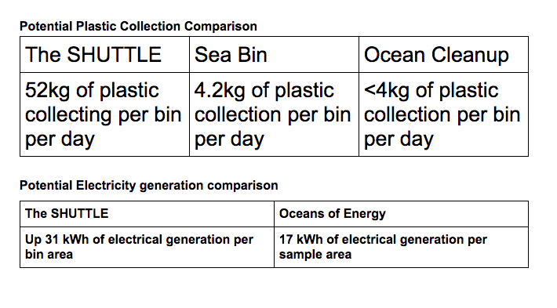
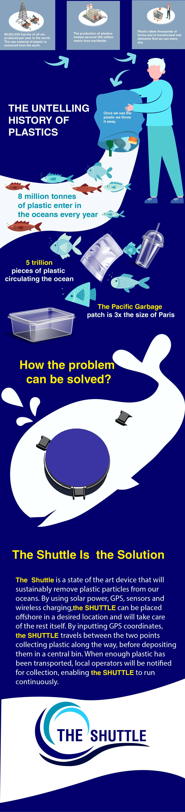

Bring Renewable Energy
to Ocean Cleaning
PRODUCT PROTOTYPE
The SHUTTLE is a state of the art device that will sustainably remove plastic particles from our oceans. By using solar power, GPS, sensors and wireless charging, the SHUTTLE can be placed offshore in a desired location and will take care of the rest itself. By inputting GPS coordinates, the SHUTTLE travels between the two points collecting plastic along the way, before depositing them in a central bin. When enough plastic has been transported, local operators will be notified for collection, enabling the SHUTTLE to run continuously.


VALUE PROPOSITION
- 1. Striving for a cleaner future using sustainable, renewable energy sources
- 2. Focusing on self-sustaining, reliable, ocean-free ocean cleaning
- 3. Collaboration with other companies and non-profit organisations
- 4. Reduce ocean plastic quantities quickly and efficiently
- 5. Reduce emission usage in pollution prevention schemes

PARTNERS
THE OCEAN CLEANUP:
By possessing the ability to hold 50m^3 of trash, the interceptor provided a valuable new way of stopping oceanic plastic pollution: Before it can happen. By using this idea, and applying it to the oceans, removing plastic pollution becomes more viable.
OCEANS OF ENERGY:
Developers of the worlds first, offshore floating solar farm, Oceans of Energy revolutionised the field of renewable energy. Using their advanced technology and applying it to our project will provide a unique way of mitigating oceanic plastic pollution.
SEABIN PROJECT:
This wonderful invention has removed more than 1 million kg of plastic from harbours and ports worldwide. By sitting just below surface level of the water, and using pumps to remove the water, the Sea Bin can run continuously, allowing constant removal to occur.
 